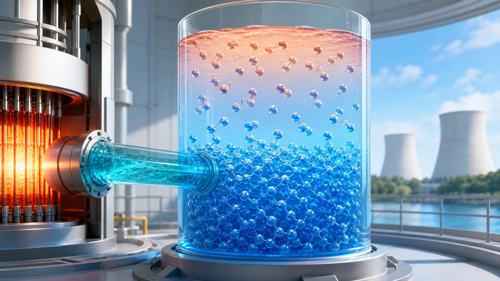
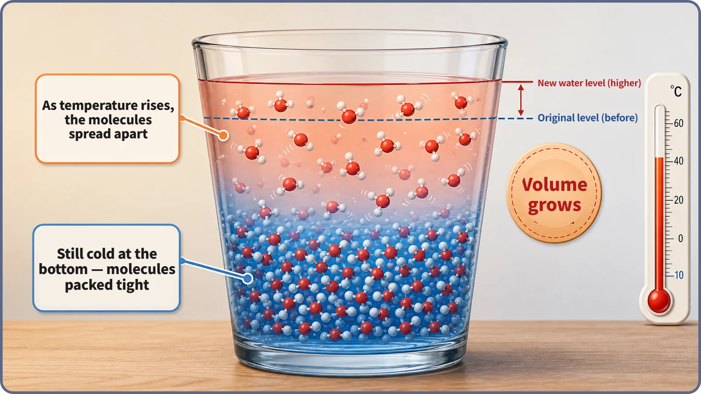
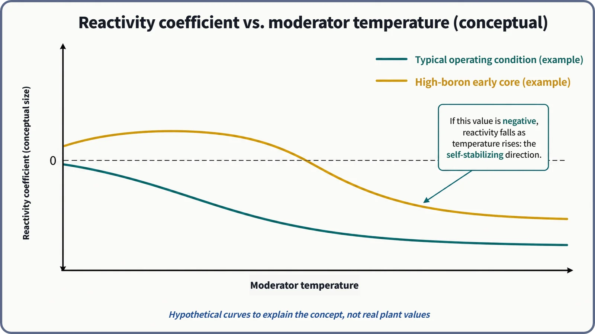

Reactor Kinetics & Reactivity · 119
Water Swells Before the Kettle Even Boils — What the Moderator Temperature Coefficient Means
Warmer water is thinner water, and thinner water slows neutrons less well, so reactivity usually falls as the moderator heats up.

The moderator temperature coefficient (α_M = dρ/dT_m) describes how reactivity changes when the moderator, in a light water reactor the same water that cools the core, warms up. Warmer water is less dense and slows neutrons less effectively, so cores are designed for this coefficient to be negative in normal power operation. It acts a beat later than Doppler feedback, and because dissolved boron can offset it, plants manage it to stay negative.
The feedback that goes through the water
Doppler feedback, covered earlier, was like a reflex inside the fuel pellet: power rises, fuel temperature rises almost at once, resonance absorption increases, and reactivity falls. It has the shortest path of all.
Feedback through the moderator is different. In a light water reactor the moderator is ordinary water that also serves as the coolant, and for it to warm up, heat from the fuel must pass through the cladding into the water. So this feedback shows up a beat later. Today's topic is that "feedback that has to go through the water": the meaning of the moderator temperature coefficient.
The moment the water quietly swells
Picture a kettle on the stove. Even before it bubbles, warming water takes up slightly more room; with a scale on the side, you'd see the level sit a little higher. As temperature rises, water molecules move slightly farther apart, so the same amount of water occupies more space. You could say the water "swells."

That's the starting point. The moderator in a light water reactor (the material that slows neutrons down) is this water. When it warms, its volume grows and its density (water molecules per unit volume) drops. The moderator's job is to make the fast neutrons released by fission collide with water molecules, more precisely with the hydrogen nuclei in the water, and lose energy. When the molecules are more spread out, a neutron simply gets fewer chances to hit one. Think of a billiard table: a rolling ball hits far more balls when they're packed tightly than when they're scattered.
Weaker moderation: which way does reactivity move?
With fewer chances to collide, a neutron has to wander farther before it becomes a "thermal neutron" (slowed down enough to cause fission readily). Meanwhile, the odds that it leaks out of the core or gets absorbed and lost in nuclides such as uranium-238 go up. Overall, the number of well-moderated thermal neutrons that contribute to fission tends to fall.
So under normal power operating conditions, the core is designed so that reactivity falls, responding in the negative direction, as the moderator temperature rises. The name for this relationship is the moderator temperature coefficient (MTC), often written α_M:
α_M = dρ/dT_m
In words: how much reactivity (ρ) changes when the moderator temperature (T_m) changes slightly. With this coefficient, the reactivity change (Δρ) for a moderator temperature change (ΔT_m) can be estimated as:
Δρ ≈ α_M × ΔT_m
If α_M is negative, a rising moderator temperature (positive ΔT_m) moves reactivity down (negative Δρ). The reactor puts on its own brakes as it warms, a property called self-regulating.
But the coefficient isn't always the same
The sign and size of the MTC are not fixed constants for a given reactor. A pressurized water reactor dissolves boron in its coolant (moderator) to control reactivity. As the water warms and expands, the dissolved boron atoms thin out along with the water molecules. Boron absorbs neutrons and lowers reactivity, so diluting it can actually push reactivity up, offsetting the negative effect of weaker moderation.
So early in core life, when boron concentration is high, the moderator temperature coefficient can be less negative, or in some cases close to a very small positive value. Later in core life, as fuel is used and boron concentration is lowered step by step, it generally moves toward clearly negative values. The exact boron concentration at which the effects cancel, and plant-specific coefficient values over a cycle, depend on reactor type and cycle stage, so this post stays with the qualitative trend.

That's why real plants manage this in advance through core design and operating procedures, for example by limiting the maximum boron concentration and using burnable absorbers (separate absorbers that are gradually used up along with the fuel), so that the coefficient stays negative (or within a specified allowable range) under power operating conditions. Specific regulatory limits differ by regulator and reactor type and are not quoted here.
Why a beat slower than Doppler?
Doppler feedback appears as the temperature of the fuel pellet itself changes almost simultaneously with power: the shortest path. For the moderator temperature coefficient to affect reactivity, heat made in the fuel must first pass through the cladding into the coolant (moderator) and actually raise the water's temperature.
That crossing takes time, just as a kettle takes a while to heat however strong the flame, so this feedback appears one beat later than Doppler. That is why reactor kinetics treats Doppler feedback as "a very fast, nearly prompt feedback" and moderator temperature feedback as "slower, but still acting within a short time." The actual heat-transfer delays vary with reactor type and operating conditions, so no numbers are given here.
Telling the neighbors apart
Moderator temperature coefficient vs. the reactor's overall temperature response (power coefficient). A reactor's overall reactivity response to a power change is the combined result of the Doppler coefficient and the moderator temperature coefficient (plus, depending on reactor type, other factors). The MTC is the single component tied to moderator temperature, not a lump sum.
"A negative coefficient means absolutely safe." A negative MTC supports inherent safety, but it does not guarantee safety in every accident scenario; it is one pillar of defense in depth, the reactor's own physical stability.
Why it matters in operation and design
Keeping the MTC negative under normal operating conditions is one of the key design requirements that give a reactor feedback that resists temperature rises on its own, and many regulatory frameworks require it to be negative (or within specified limits) during power operation.
Whenever coolant temperature changes, during load following, startup and shutdown, or heat-up and cool-down, reactivity changes through the MTC too, so operators and control systems account for it when adjusting rods or boron. Core designers plan fuel loading, burnable absorbers and boron schedules so the coefficient stays within the required range across the whole cycle, from the high-boron start to the low-boron end.
Two common misconceptions
"Every temperature feedback is Doppler." No. Doppler feedback concerns the fuel's own temperature; the MTC is a separate feedback concerning coolant (moderator) temperature. They differ in speed (Doppler is much faster) and in where they act (inside the fuel vs. in the moderator).
"The MTC must always be negative, and always is." Under some conditions, such as early in core life with high boron concentration, it can be less negative or close to a small positive value. So plants manage it separately to keep it within the required range during power operation. It's more accurate to say it is "managed to stay negative" than "fixed negative by design."
The short version
- The moderator temperature coefficient (α_M = dρ/dT_m) describes how much reactivity changes when the moderator (in a light water reactor, the water that is also the coolant) warms up.
- Warmer water is less dense and moderates neutrons less well; cores are designed so that under normal operating conditions this lowers reactivity (negative direction).
- Its sign and size can vary with boron concentration and fuel depletion, so plants manage it to stay negative (or within allowed limits).
- It appears a beat later than Doppler (fuel temperature) feedback, by the time it takes heat to reach the water, and keeping it negative is a key design requirement for a reactor's inherent self-stability.